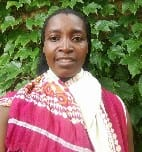

Hello! My name is Austina Murara. I am a student in WDD130 learning web development. This page is part of my coursework where I showcase my skills and projects. I am originally from Zimbabwe and have a passion for technology and design. Feel free to explore my page and learn more about me and my work!